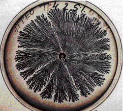
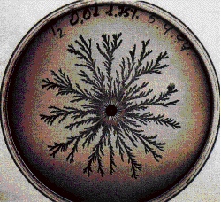

| Under adverse conditions, B 168 usually grow in compact clusters,
because the bacteria are immobile. |
| However, if the colonies are grown for very
long periods, they sometimes exhibit a new mode of branching growth. |
| These B 168 are called the T morphotype. |
| These pictures are of T morphotype colonies
grown by
Ben-Jacob, Shochet, Cohen, Tenenbaum, Czirok and Vicsek. |
| Here are some examples grown under different conditions. |
|
|
| nutrient = 15 (g/l), agar = 2.25% |
|
|
|
| nutrient = 4, agar = 2.25% |
|
|
 |
| nutrient = 2 (g/l), agar = 1.75% |
|
|
 |
| nutrient = 0.01 (g/l), agar = 1.75% |
|
|
| Click each small picture for an enlargement in a new window. |